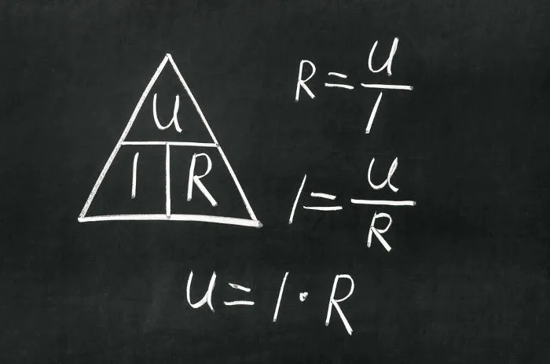

O que é a Lei de Ohm?
A Lei de Ohm é uma das leis fundamentais da eletricidade, estabelecida por Georg Ohm em 1827. Ela descreve a relação entre tensão, corrente e resistência em circuitos elétricos.
Esta lei é a base para o entendimento do comportamento dos circuitos elétricos e para o cálculo de grandezas fundamentais na eletrônica.
Fórmula Principal:
V = R × I
Outras variações da fórmula:
I = V ÷ R
R = V ÷ I

Resumo das principais fórmulas e relações da Lei de Ohm.
Leis de Ohm: Descrição Detalhada
As leis de Ohm permitem calcularmos importantes grandezas físicas, como a tensão, corrente e a resistência elétrica dos mais diversos elementos presentes em um circuito. No entanto, essas leis só podem ser aplicadas a resistências ôhmicas, isto é, corpos cujas resistências tenham módulo constante.